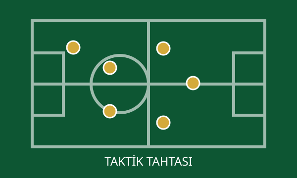
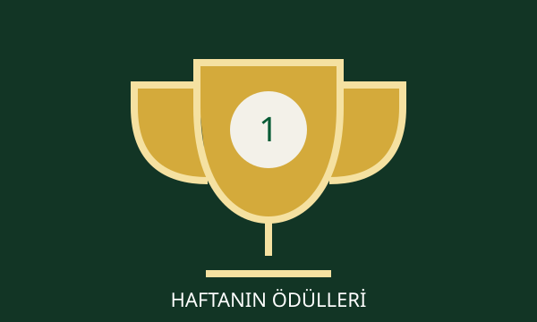

HABER ARŞİVİ
Futbol, E-Mac, fantazi ve transfer gündeminin tüm başlıkları.



| # | TAKIM | O | G | B | M | P | FORM |
|---|---|---|---|---|---|---|---|
| 1 | FBFenerbahçe | 3 | 3 | 0 | 0 | 9 | GGG |
| 2 | GSGalatasaray | 3 | 3 | 0 | 0 | 9 | GGG |
| 3 | BJKBeşiktaş | 3 | 2 | 0 | 1 | 6 | GMG |
| 4 | TSTrabzonspor | 3 | 1 | 1 | 1 | 4 | BGM |
| 5 | İBBaşakşehir | 3 | 1 | 1 | 1 | 4 | MGB |
| 6 | SSamsunspor | 3 | 1 | 1 | 1 | 4 | GBM |
Takımlar ve puanlar prototip gösterimidir; gerçek lig verileriyle güncellenebilir.